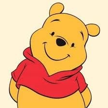

時璃風医詩🍥🌈
@hagishigure
@GeorgianaAurum @sauricat
你模仿她們說話的語氣還是太保守了，剛刷新就看到了這個。
喜歡健美都不行了對於她們來說。

89栗64娜
@89li64na
女性的的体脂率就注定女性不可能在自然条件下长出图3的体型，图4也不太可能。驴同怎么跟健身蝻一样喜欢这种像长满了巨大丑陋瘤子的体型？
PS.其实人类在自然条件下都不应该长这样，只是屌畜为了虚荣心普遍偷摸打药。打药的屌畜都死得很早，三四十就死。 https://t.co/qz0yHX1dcM
✨喬治亞娜🔮怪人系個人不勢Vtuber
@GeorgianaAurum
@hagishigure @sauricat 她們就整天講那些幾乎已經是「女性主義」刻板印象的老生常談，但是當我提到胖女人遭受結構性壓迫就拼命找可笑的理由說「這不是女性主義」、「這是妳不努力」、「女性主義為什麼要承接一大堆的東西」，她們才不在乎整體女性權利，她們只是要表達自己因為漂亮所以比其他女人擁有更多權力